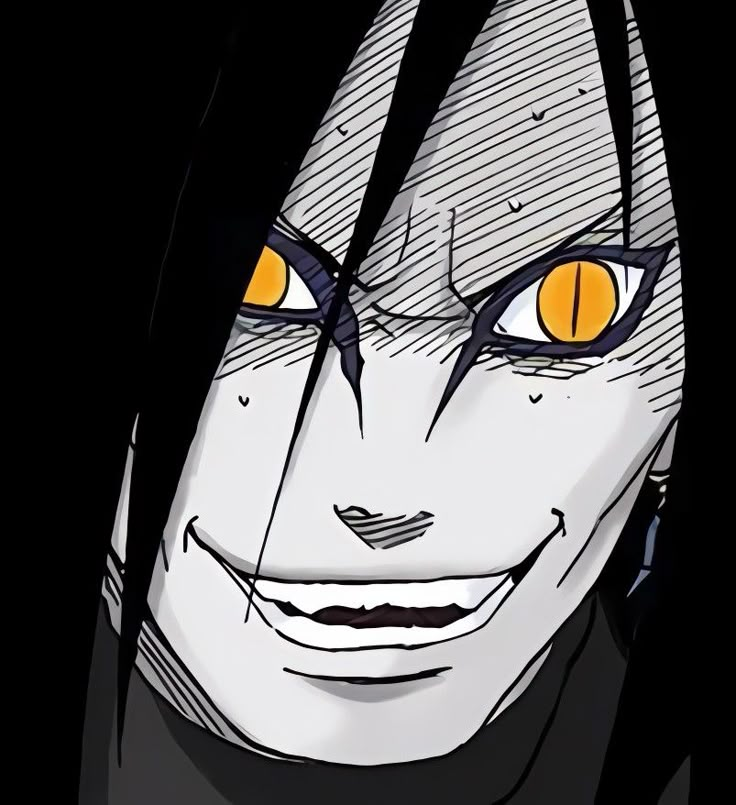

Selamat Datang di Web pribadi ku ✌️
Tempatnya adu mekanik dadu dan sinergi hero. Gak perlu mikir keras yang penting setup papan rata kanan!
Lagi asik mengjinakkan tag HTML, bergulat dengan CSS, demi bikin tampilan layar monitor jadi makin estetik.
Bahan bakar utama sebelum mikir sinergi catur atau nyari *bug* di codingan. Kopi hitam tanpa drama.
Bukti nyata perjuangan begadang di Land of Dawn. Bukan kaleng-kaleng, rank tertinggi di Mobile Legends sudah di tangan.
Sebuah mahakarya lokal dengan gaya graffiti bubble responsif yang sedang anda lihat saat ini. Hasil racikan sendiri!
Skor poin yang melambung tinggi sampai ke angkasa. Siap menantang siapa saja yang berani maju di papan catur.
Mau ngajak mabar Magic Chess, push rank MLBB, atau sekadar diskusi ngoding sambil ngopi?
GAS HUBUNGI!